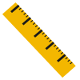
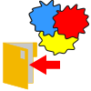
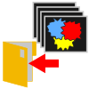

Results#
To save export the results open the results window by pressing  Results.
Results.
The results window#
Use scaled size can be checked to scale all values from pixel to a specified distance.
To set the scale in pixel per mm fill in the corresponding field or use the  tool. When selecting the measure tool, you can set 2 markers by pressing left_mouse in the image to measure the distance between the 2 markers and and align them to a specified distance. The scale in pixel per mm is automatically filled in the corresponding field.
{kind=link}
Set the scale by measuring the distance defined by the scale bar#
Press  Settings to open the settings menu, specific for each application. In the settings menu you can specify the save options.
Settings to open the settings menu, specific for each application. In the settings menu you can specify the save options.
To export labels as masks, for example to use with another software, press  Export Mask and select a location. To export all labels in the test test folder press  Export all Masks, the corresponding masks are saved automatically in the subfolder named ‘exported_masks’ present in the current test folder.
{kind=link}
{kind=link}
Note
Masks are saved as tiff-files, having the same size as the corresponding image, with all pixel that are labelled as background set to 255 and all pixel that are labelled by a class set to the value corresponding to that class (i.e. first class set to 1).
Press  Save to save the results of the currently displayed image.
Save to save the results of the currently displayed image.
Press Save all to save the reuslts of all images in the test folder.
{kind=link}